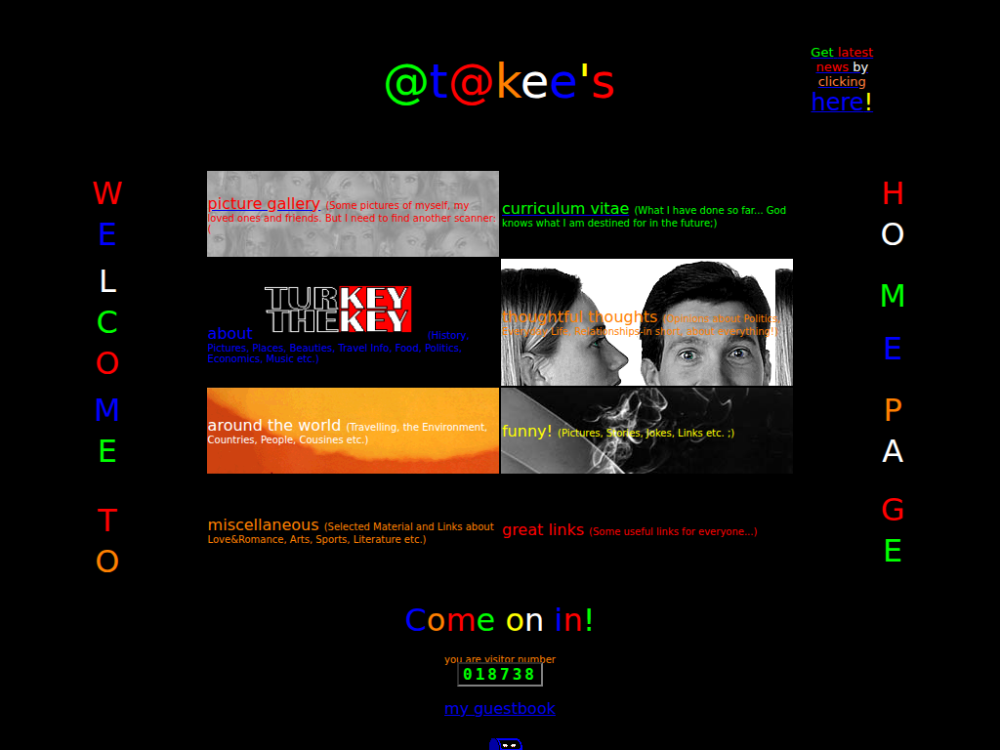
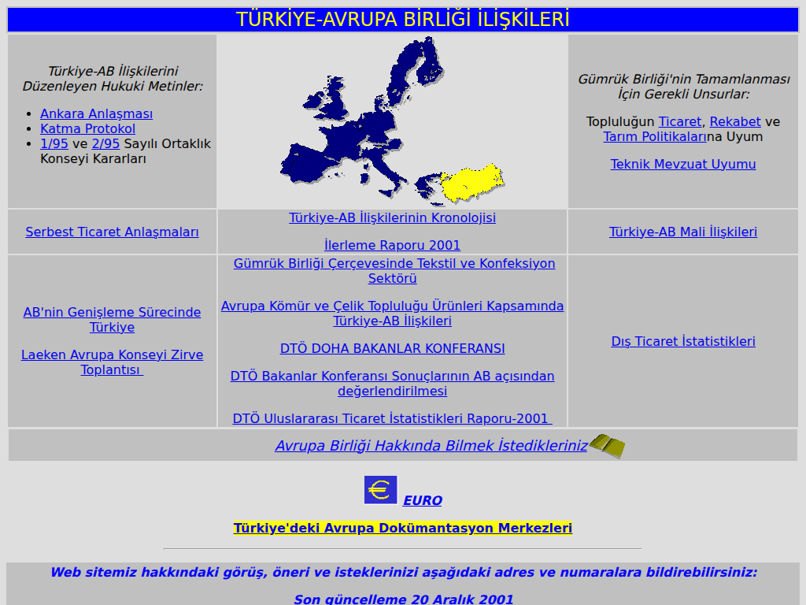
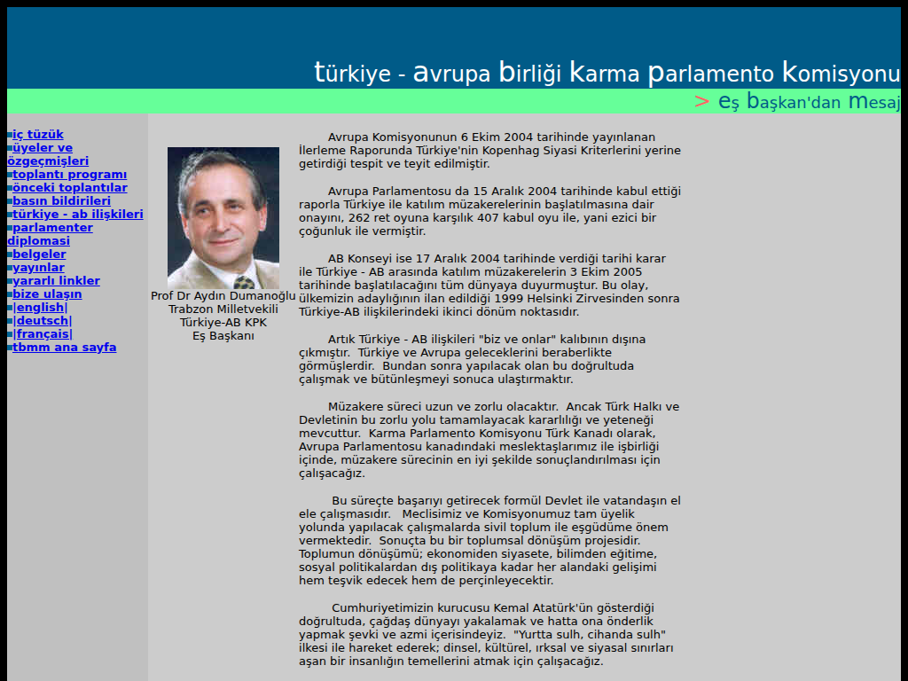
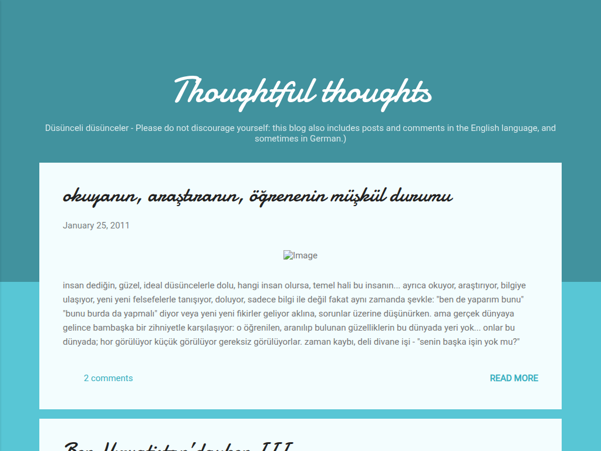
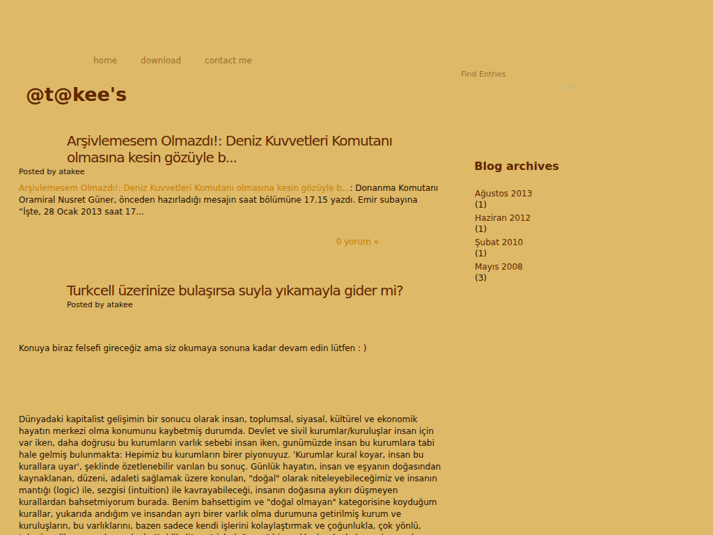

The hand-coded era · 1999 – 2006

@t@kee's homepage
My personal homepage on FortuneCity: rainbow lettering, a picture gallery, travel pages, jokes and a guestbook. The hit counter and the news headlines box work again — rebuilt after their services died two decades ago.
One photo has pointed at C:\My Documents\ since the day it was uploaded.
Enter site → Wayback original
Türkiye–EU Relations · Undersecretariat of Foreign Trade
The EU affairs section of dtm.gov.tr, which I built and ran as its webmaster: legal texts of Türkiye–EU relations, free trade agreements, the customs union and trade statistics — 128 pages of it.
Somewhere on the map of Europe, one tiny spot is a secret link. Try Üsküdar.
Enter site → Wayback original
Turkey–EU Joint Parliamentary Committee · TBMM
The Joint Parliamentary Committee's site at the Turkish Grand National Assembly, in four languages, with an archive of the committee's joint declarations and press releases from the accession-talks years.
“En iyi, Microsoft Internet Explorer ile görüntülenir.”
Enter site → Wayback originalThe blog era · 2008 – 2013 rescued alive

Thoughtful thoughts
When the hand-coding stopped, the writing moved to Blogger: essays on politics, integration, travel — in Turkish, English and German. Its name is no accident: the 1999 homepage had a section called thoughtful thoughts; eleven years later it became this blog.
Rescued from Google's hands while still breathing — every image now lives here.
Enter site → Live original
@t@kee's blog
The personal notebook of the blog years: naval-archive detective work, Turkcell rants, philosophical takes on institutions — six posts across five years, ending where blogging itself faded out.
Lives at an address named after a forum that never came to be — never bothered to rename it.
Enter site → Live original